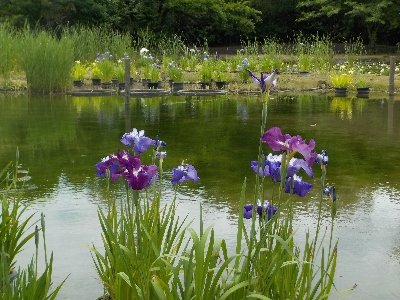
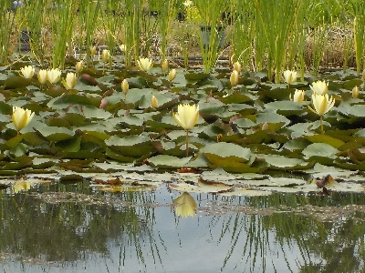
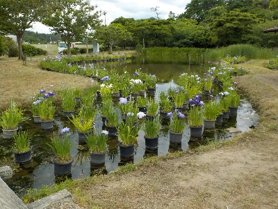
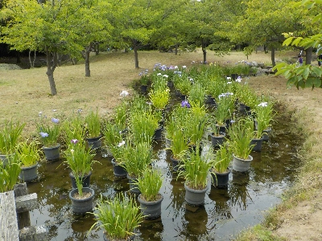

浜遊自然館にショウブとスイレンを見に行きました。
2024/06/08

明日はショウブまつりがあって賑やかなんだろうなと思いましたが、のんびり見たかったの前日に見に行きました。

他にも人がいらっしゃってましたが、自分のペースで鑑賞できました。


いろいろな種類のショウブの鉢植えがありました。種類によって成長具合が違うようなので、長い期間楽しめそうでした。
島根県出雲市大社町中荒木2484番地
2024/06/08

明日はショウブまつりがあって賑やかなんだろうなと思いましたが、のんびり見たかったの前日に見に行きました。

他にも人がいらっしゃってましたが、自分のペースで鑑賞できました。


いろいろな種類のショウブの鉢植えがありました。種類によって成長具合が違うようなので、長い期間楽しめそうでした。